ขวาน
ขวานทั้งหมด 46 ชิ้น เรียงตามเลเวล
| ชื่อ | Lv | ATK | ธาตุ | ได้จาก |
|---|---|---|---|---|
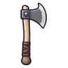 ขวานผ่าฟืน | 1 | 64 | ไม่มีธาตุ | ตอไม้ถ่านคุ 0.25% |
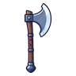 ขวานป่าเถื่อน | 1 | 60 | ไม่มีธาตุ | อาวุธเริ่มต้นของสาย (ได้ตอนเปลี่ยนอาชีพ) |
| 4 | 66 | ดิน | มันฝรั่งเดินได้ 0.25% | |
| ขวานชีสก้อนโต | 7 | 61 | ไม่มีธาตุ | แครอทจอมพุ่ง 0.12% |
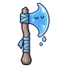 ขวานสไลม์น้ำใส | 10 | 58 | น้ำ | สไลม์น้ำใส 0.06% |
| 13 | 65 | ดิน | หมูป่าเขี้ยวตัน ร่างเขาเงิน 0.25% | |
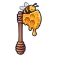 ขวานรวงผึ้ง | 16 | 61 | ไม่มีธาตุ | สไลม์น้ำผึ้ง 0.12% |
| 18 | 66 | ไม่มีธาตุ | ปูกะโหลกเขา ร่างก้ามฟ้า 0.5% | |
| 19 | 58 | ลม | ผีเสื้อราตรีเรืองแสง 0.06% | |
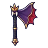 ขวานผ้าคลุมราชาค้างคาว | 22 | 79 | มืด | ราตรีราชาค้างคาว 0.5% |
| 27 | 108 | ไม่มีธาตุ | อัศวินโล่หลุมศพ 0.25% | |
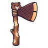 ขวานฟันบีเวอร์ | 30 | 97 | ไม่มีธาตุ | นกฮูกหิน ร่างดาว 0.12% |
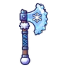 ขวานเกล็ดหิมะ | 32 | 92 | น้ำ | แพะภูเขา 0.06% |
| 34 | 107 | ไม่มีธาตุ | ด้วงแบกเห็ด 0.25% | |
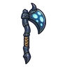 ขวานด้วงหมวกเห็ด | 36 | 102 | ดิน | ด้วงหมวกเห็ด 0.25% |
| 37 | 97 | มืด | หมาป่าเงาจันทร์ 0.12% | |
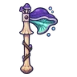 ขวานเห็ดหิ้งเรืองแสง | 38 | 126 | พิษ | ราชาเห็ดเรืองแสง 0.5% |
| 40 | 97 | ไม่มีธาตุ | ป้ายหลุมศพผีสิง 0.12% | |
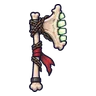 ขวานกรามโครงกระดูก | 42 | 92 | วิญญาณ | โครงกระดูกทหาร 0.06% |
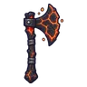 ขวานถ่านคุ | 44 | 103 | ไฟ | ตอไม้ถ่านคุ 0.25% |
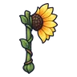 ขวานทานตะวัน | 46 | 92 | ศักดิ์สิทธิ์ | ยุงยักษ์ 0.06% |
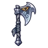 ขวานจะงอยอินทรีพายุ | 48 | 97 | ลม | อินทรีพายุ 0.12% |
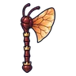 ขวานปีกนางพญามด | 49 | 126 | ดิน | รังนางพญามด 0.5% |
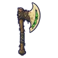 ขวานเขี้ยวหมูพิษ | 51 | 132 | พิษ | หมูหนองพิษ ร่างขนเขียว 0.24% |
| 52 | 148 | ไม่มีธาตุ | คนกรอกแสง 0.25% | |
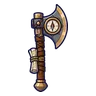 ขวานเข็มทิศนักเดินทาง | 54 | 132 | ไม่มีธาตุ | ผู้จุดตะเกียงกลวง 0.12% |
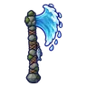 ขวานน้ำตก | 56 | 127 | น้ำ | ภูตละอองน้ำ 0.06% |
| 58 | 132 | พิษ | คางคกพิษ 0.12% | |
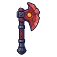 ขวานหินโกเลมแดง | 60 | 140 | ไม่มีธาตุ | โกเลมหินแดง 0.25% |
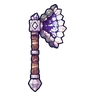 ขวานหินโพรงคริสตัล | 63 | 127 | ดิน | โกเลมหินแดง 0.06% |
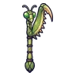 ขวานแขนตั๊กแตนตำข้าว | 65 | 132 | ไม่มีธาตุ | หุ่นไร้หน้า ร่างไม้ดำ 0.12% |
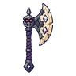 ขวานอัศวินกระดูก | 68 | 132 | ไม่มีธาตุ | อัศวินกระดูก 0.12% |
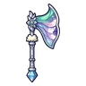 ขวานแสงเหนือ | 71 | 127 | ศักดิ์สิทธิ์ | ทหารวิหาร 0.06% |
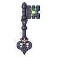 ขวานกุญแจราชาสุสาน | 74 | 173 | วิญญาณ | บัลลังก์ราชาสุสาน 0.5% |
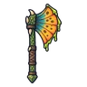 ขวานแผงคอกิ้งก่า | 76 | 161 | พิษ | กิ้งก่าแผงคอพ่นพิษ 0.06% |
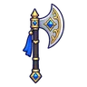 ขวานศึกราชวงศ์ | 77 | 178 | ไม่มีธาตุ | ตู้เอกสารโล่ 0.25% |
| 80 | 183 | มืด | นกกระสาเงา 0.25% | |
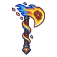 ขวานดาวหาง | 82 | 161 | ไฟ | อิมป์เปลวไฟ ร่างไฟฟ้า 0.06% |
| 84 | 183 | ไม่มีธาตุ | หุ่นไร้หน้า 0.25% | |
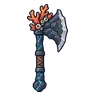 ขวานโกเลมปะการัง | 84 | 168 | น้ำ | โกเลมปะการัง 0.12% |
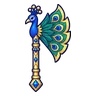 ขวานหางนกยูง | 86 | 168 | ไม่มีธาตุ | ลูกมังกรไพร 0.12% |
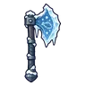 ขวานธารน้ำแข็ง | 88 | 161 | น้ำ | มือหุ่นยักษ์ 0.06% |
| 90 | 161 | ศักดิ์สิทธิ์ | ผลึกดาวมีชีวิต 0.06% | |
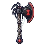 ขวานแมงมุมแม่ม่ายดำ | 92 | 168 | พิษ | สไลม์เรืองแสง 0.12% |
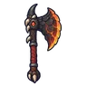 ขวานเกล็ดมังกรลาวา | 95 | 220 | ไฟ | หัวใจมังกรลาวา 0.5% |
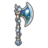 ขวานตำนานพงไพรแสงจันทร์ | 99 | 238 | ดิน | ดรอปทั่วโลก Lv 90+ |